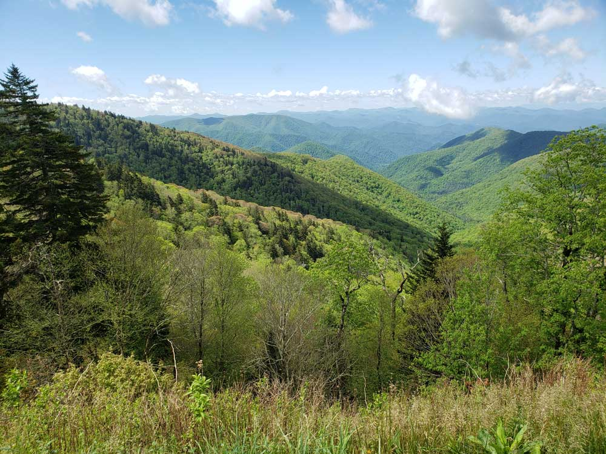
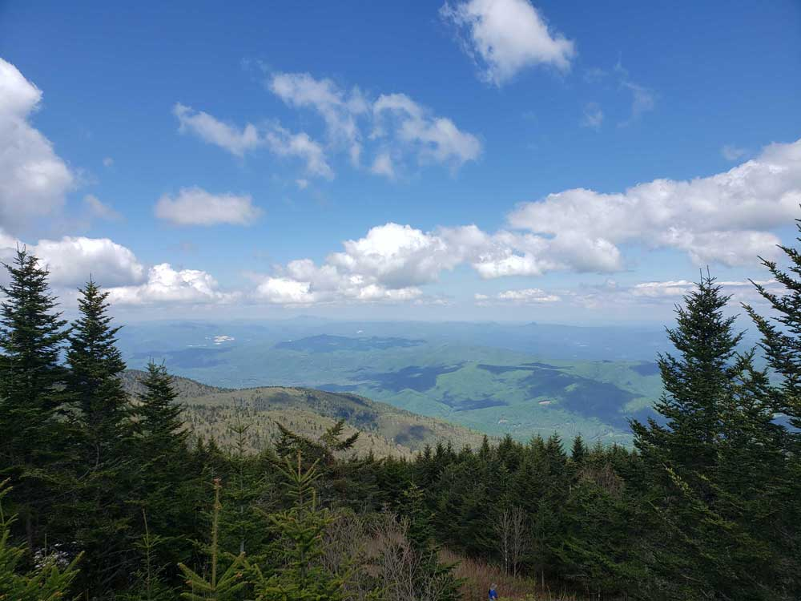

North Carolina was named in honor of King Charles I of England who first formed the English colony, Carolus being Latin for "Charles". On December 17, 1903, Orville and Wilbur Wright successfully piloted the world's first controlled, sustained flight of a powered, heavier-than-air aircraft at Kill Devil Hills in North Carolina's Outer Banks.
North Carolina is defined by a wide range of elevations and landscapes. From west to east, North Carolina's elevation descends from the Appalachian Mountains to the Piedmont and Atlantic coastal plain. North Carolina's Mount Mitchell at 6,684 feet is the highest-point in North America east of the Mississippi River. Most of the state falls in the humid subtropical climate zone; however, the western, mountainous part of the state has a subtropical highland climate.
Every year the Appalachian Mountains attract several million tourists to the western part of the state, including the historic Biltmore Estate. The scenic Blue Ridge Parkway and Great Smoky Mountains National Park are the two most visited national park and unit in the United States with more than 25 million visitors in 2013. The City of Asheville is consistently voted as one of the top places to visit and live in the United States, known for its rich art deco architecture, mountain scenery and outdoor activities. The Outer Banks and surrounding beaches attract millions of people to the Atlantic beaches every year.
Southeast > North Carolina
Map of North Carolina
Interactive North Carolina map, showing all parks, preserves, trails and other locations
Asheville
City in western North Carolina’s Blue Ridge Mountains known for a vibrant arts scene and historic architecture, including the dome-topped Basilica of Saint Lawrence, the vast 19th-century Biltmore estate, Downtown Art District, and River Arts District, former factory buildings house artists' studios

Blue Ridge Parkway
469-mile parkway begins in Virginia and meanders through about 250 miles of western North Carolina, offers drivers numerous opportunities to stop at overlooks, quaint mountain towns and hiking and biking trails

Mt Mitchell
The highest peak of the Appalachian Mountains and the highest peak in mainland eastern North America